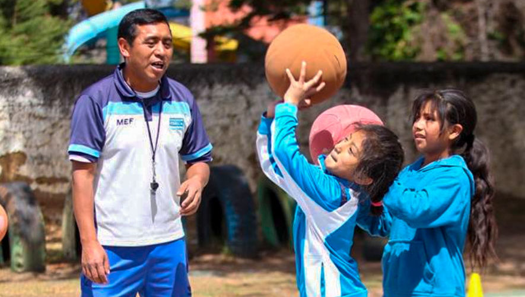
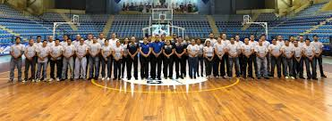

El baloncesto llegó a Guatemala entre 1910 y 1914, introducido por extranjeros que llegaron a nuestro país por diversos motivos y algunos guatemaltecos que regresaban luego de haber residido un tiempo en el extranjero, quienes en sus momentos de ocio se juntaban a jugar emocionantes partidos, a la vista de un curioso público que pronto se interesó en el juego y comenzó a practicarlo. Particularmente son los Canadienses y Estadounidenses los que lo juegan en el antiguo Club de Entrenamiento para militares, entre 1,910 y 1,914. Lugar donde actualmente funciona el Club Los Arcos, propiedad de la Universidad de San Carlos de Guatemala, en la Avenida de Las Américas, zona 14. Por eso se cree que la cancha del Club Los Arcos fue la primera instalación para baloncesto en Guatemala. Estos extranjeros, de profesión militares, jugaban en las primeras canchas donde acudía la gente para observar este nuevo deporte.
La Segunda cancha donde se desarrollaron encuentros entre civiles fue la llamada Concepción, ubicada en la 6ta. Avenida "A" entre 4ta. Y 5ta. Calle de la zona 1. Atrás del ahora Palacio Nacional. Esta cancha fue absorbida por los militares y en su lugar, como compensación, se construyó la cancha de San Sebastián, en donde funcionaba la Facultad de Farmacia de la Universidad de San Carlos de Guatemala. 5ta. Avenida v 3ra. Calle zona 1
Uno de los primeros encuentros de los que se tiene información al momento, es el que se publica en el diario El Imparcial, el 16 de agosto de 1922. En el cual se invita a los aficionados al baloncesto a presenciar el encuentro a celebrarse en el dia en la cancha de San Sebastián entre las Facultades de Medicina y la de Derecho de la Universidad de San Carlos a las 17:00hrs. El dia 17 de agosto aparece la noticia en el mismo diario, informando del triunfo de los estudiantes de Derecho sobre los de Medicina luego de una lucha bastante reñida. A pesar de lo poco entrenado el publico salió impresionado. Dentro de los estudiantes que participaron en dicho encuentro destacan nombres como el del posteriormente periodista: David Vela y el premio Nobel de Literatura, en ese entonces estudiante universitario. Miguel Ángel Asturias. Posteriormente se construyeron otras canchas como las del Cerrito del Carmen 12 avenida y 4ta. Calle zona 1, La Casa de la familia Rivera en 1,925 y el Campo de la Ermita en la 
La Irca (Empresa Norteamericana de Ferrocarriles) lo alquilaba para juegos en 1,927. Más tarde se construyen las canchas del Club Hércules en la 13 calle y 12 avenida de la zona 1 en 1,932. En ese mismo año funciona la cancha de la Escuela Nacional de Varones República de Costa Rica entre 9na. y 10ma. calle zona 1. La cancha del Instituto Nacional Central de Varones (que años más tarde seria cuna de grandes figuras del baloncesto nacional) en la 9na.avenida y 9 calle zona 1, el Gimnasio de la universidad Popular, 10ma avenida zona 1, en donde en la década de los 40's y 50's toma un gran auge el baloncesto. El Gimnasio de la ciudad de los deportes más tarde llamado Teodoro Palacios Flores (en honor al gran saltador de altura Y posteriormente jugador de baloncesto) es inaugurado en 1.950 con motivo de los VI juegos Centroamericanos y del Caribe, convirtiéndose desde esa fecha en el escenario de mayor importancia del país para la practica del baloncesto. El deporte como fenómeno sociocultural y componente de profundas dimensiones de la Cultura Física, surge en civilizaciones tan antiguas como la China, Egipto, Etc. 
Fueron los griegos en el año 776 AC. con los Juegos Olímpicos antiguos que organizaban una espectacular y mística concepción del deporte como medio estético, social, religioso y atlético. Sociedades como Roma, en la decadencia del esclavismo, Europa Central en la etapa del feudalismo, manifiestan una serie de expresiones físicas de carácter ritual y de élite, vinculadas al ejercicio inspirado en el combate. A mediados del siglo XVIII (1700) y como producto de la acumulación originaria de capital, surge el deporte moderno, que se diferencia del deporte antiguo, con sus propias características de rendimiento y cuantificación de los resultados, y que, como producto de la Revolución industrial en Inglaterra, se difundiría aceleradamente por todo el planeta como consecuencia del comercio internacional. El deporte moderno, como categoría ideológica del nuevo modo de producción capitalista representó el permanente e inconmensurable objetivo de la competencia actual: LA IMPOSICIÓN DE MARCAS; y con ella el vertiginoso ascenso y difusión de una de las más populares manifestaciones socioculturales de la humanidad, la cual a juicio de los sociólogos llegó a convertirse en EL FENÓMENO CULTURAL MAS IMPORTANTE DEL SIGLO XX. y muy posiblemente del siglo XXI que recién iniciamos.